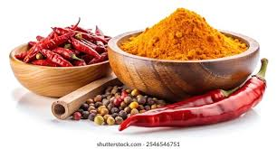
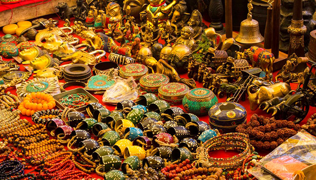

A trusted Indian Export Company >
Gopalexim is a trusted Indian export company delivering quality products worldwide with certificated sourcing, transparent process and reliable logistics.
- Spices
- Plant parts used for flavoring food.
- Garments
- Get traditional Indian garments.
- Handicrafts
- Objects made skillfully by human hands.
- More...
Spices

Spices are dried seeds, fruits, roots, bark, or vegetative substances derived from plants, used primarily to flavor, color, or preserve food. Beyond the culinary arts, they are also historically significant drivers of global trade and are heavily utilized in traditional medicines, perfumes, and cosmetics.
Health Benifits
They Fight Inflammation: Your body uses inflammation to fight injuries, but too much of it causes joint pain and diseases. Spices like turmeric and ginger act like natural, gentle ibuprofen to calm this swelling down.They Protect Your Cells: Every day, your body faces stress from pollution, bad food, and aging, which damages your cells. Spices are packed with "antioxidants," which act like tiny shields to protect your cells from this damage.They Help Your Gut: Spices like cumin and black pepper wake up your stomach juices. This helps your body digest food faster, prevents bloating, and feeds the good bacteria in your gut.
Indian Garments
Indian garments are famous worldwide for their vibrant colours, intricate embroidery, and rich textile heritage. Rooted in thousands of years of tradition, traditional attire varies deeply by region, featuring iconic pieces like the elegant saree, the versatile salwar kameez, and the regal sherwani. These clothes utilize diverse, time-honoured techniques such as hand-weaving, block-printing, and detailed threadwork like Zardozi and Chikankari. Today, the Indian garment industry seamlessly blends these historical craftsmanship methods with contemporary styles, making Indo-western fusion wear a dominant force in global fashion.
Handicrafts

Indian handicrafts are a reflection of the country's rich cultural diversity and centuries-old artistic traditions. Passed down through generations, these handmade items span a vast range of mediums, including pottery, woodwork, metalware, and hand-woven textiles. Distinct regional styles define the craft landscape, from the intricate marble inlay work of Agra to the vibrant terracotta pottery of West Bengal and Blue Pottery of Jaipur. Beyond their artistic and aesthetic value, handicrafts serve as a vital economic engine for India, providing sustainable livelihoods to millions of rural artisans and preserving the nation's unique cultural heritage in the global marketplace.
Help small businesses
Low Starting Costs: People do not need expensive factories or heavy machinery to make handicrafts. They only need basic tools, local materials, and their hands, making it very easy and cheap for anyone to start a business.Keeps Money in the Community: When a craftsman creates a product, they usually buy their materials from local suppliers. This means the money stays inside the neighborhood, helping nearby families and boosting the local economy.Creates Jobs for Everyone: Handicraft businesses often employ women, youth, and people living in rural villages who might not have access to formal corporate jobs. It provides them with a steady income and financial independence.
Back To Top